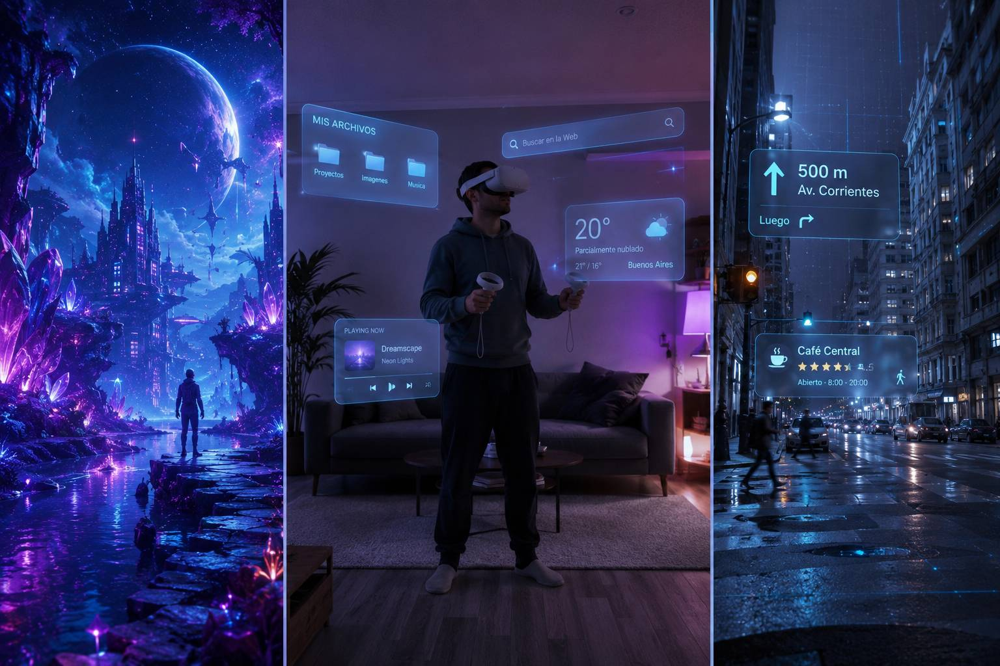

VR, AR, MR and XR: what each one actually is (and how to tell them apart)

The technology is easier to understand than the alphabet soup around it. VR, AR, MR, XR — four acronyms that get used interchangeably even by people who should know better, which is how you can read three articles and come away more confused than when you started. So here's the whole map in one place, in plain language, with the one thing most explainers skip: what you can actually buy and use today versus what's still a promise.
Start with VR, virtual reality, because it's the cleanest of the four. VR replaces your world. You put on the headset and the real room is gone — you're standing on a mountain, inside a spaceship, up in a boxing ring, and when you turn your head the whole place turns with you. There's no window back to your living room, and that's the entire point. This is what a Meta Quest does when you're deep in a game like Beat Saber, what the PSVR2 does hooked up to a PlayStation 5, what a PC headset does wired to a gaming rig. (Heads up: moving around in full VR can make you queasy at first — it's normal, and we have a whole guide on building your VR legs.) If your reaction is "okay, but which of those is right for me," that's the exact question our quiz answers.
AR, augmented reality, does the opposite: instead of replacing your world it adds to it. You still see the real room, and digital things get layered on top. Here's the hook — you've almost certainly used AR already without ever calling it that. Every Instagram or Snapchat filter that sticks dog ears on your face is AR. Pokémon GO dropping a creature onto your real sidewalk is AR. The measuring app on your phone that lays a virtual tape measure across your actual desk is AR. Google Maps floating giant arrows over the street through your camera while you walk somewhere is AR. None of it needs a headset — the phone in your pocket has been doing augmented reality for years.
MR, mixed reality, is the one people struggle with most, so here's the shortcut: it's the serious version of AR, where the digital objects don't just float on a screen but actually understand your room and behave like they belong in it. A virtual monitor you pin to your real wall that stays put as you walk around. A game where robots smash through your actual couch. Apps parked in the air of your kitchen that you reach out and touch. The reason this matters to you specifically: it isn't the future. The Quest 3 already does it. Its cameras show your real room in full color and the headset places virtual things into that room convincingly — that's called color passthrough, and it lives in the same headset people buy for VR. So the same US$599 device (or the US$349 Quest 3S, with weaker cameras) covers both VR and MR. The luxury take on the same idea is Apple's Vision Pro, a genuinely stunning "spatial computer" that also happens to cost around US$3,500 and has sold poorly for precisely that reason.
XR, extended reality, is the easy one, because it isn't a fourth kind of thing — it's the umbrella term for all three. When someone says "the XR industry" or "an XR headset," they mean the whole family at once: VR plus AR plus MR. That's it. It exists so nobody has to list all three every single time. (You'll also hear Apple call its version "spatial computing," which is mostly the same idea in a nicer suit.)
Here's the map at a glance:
| What you see | What you need today | Everyday examples | Can you buy it now? | |
|---|---|---|---|---|
| VR (virtual reality) | The real world disappears; you're inside another one | A dedicated headset (Quest, PSVR2, PC VR) | Beat Saber, flight sims, horror games | Yes — from ~US$349 (Quest 3S) |
| AR (augmented reality) | Your real world with digital things layered on top | The phone you already own | Instagram filters, Pokémon GO, phone measuring, Maps arrows | On your phone, yes and free; as glasses, barely |
| MR (mixed reality) | Your real room in color, with virtual objects that live in it | A headset with color passthrough (Quest 3/3S, Vision Pro) | A virtual screen on your real wall, robots bursting from your couch | Yes — the Quest 3 does it from US$599 |
Now the honest part, because this is where the marketing runs ahead of reality. VR and MR you can genuinely buy and use today — one affordable headset covers both. AR is trickier. The AR you actually use lives on your phone, and it's free. The dream version — light glasses that paint holograms over the world all day long — is not a real consumer product yet, no matter how many concept videos suggest otherwise. The closest thing that ships is Meta's Ray-Ban Display: glasses with a small screen tucked into the lens that show you notifications, translations and walking directions, controlled by a wristband, for US$799. But that's a heads-up display sitting in your glasses, not the world repainted with holograms — and for now it only sells in the United States, with waitlists long enough that Meta paused the international rollout entirely. The real thing, the kind Meta teased with its Orion prototype or that Snap has been building, is still a prototype and a developer kit, not something on a shelf, and the roadmaps point to 2027 at the earliest.
So if you want to try any of this right now, the practical answer is short: full VR and convincing mixed reality both live inside one accessible headset, and the AR you can actually use is already in your hand. If you're trying to work out which headset really fits how you'd use it, that's what the quiz is for.
Answer 7 quick questions and find the headset that fits you in 60 seconds.
Take the VR Finder quiz →Prices and specifications are subject to change. See our Privacy Policy.